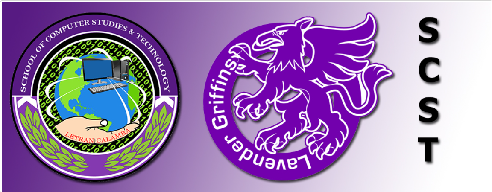

School of Computer Studies and Technology
Philosophy and Objectives
About the Office
The School of Computer Studies and Technology is the arm of the Colegio that manages the courses BS Computer Science, BS Information Technology and BS in Entertainment and Multimedia Computing Specializing in Digital Animation Technology and Game Development. The school also manages all the rooms (except for surfing laboratory room) present at the St. Thomas Aquinas Building or the ITCC Building.
VISION
The School of Computer Studies and Technology envisions itself as a Center of Development in Information Technology Education by year 2021, sustaining its commitment by producing faith-centered, competitive, and well equipped students.
MISSION
The school commits itself to holistically develop students' ICT computing skills and other stakeholders' professional competencies for their productive careers that will continuously contribute to the development of the country through technological leadership that is Filipino, Dominican, and Christian in orientation.
QUALITY OBJECTIVES
- To provide students with quality programs in the fields of computing and information technology education that are in demand and responsive to the national and international industry needs.
- To deliver relevant and quality computing and information technology curricular programs that promote the Colegio as one of the nationally and internationally recognized educational institutions.
- To continually prepare and improve the administrators, faculty members, and staff to deliver quality instruction and support services that will effectively and efficiently contribute to the delivery of programs.